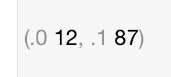

Then look over to the right. What's this?

It's a clue to what's next.
Now let's call the function and assign the return value into a constant.
1 2 3 4 5 | let aTuple = twoNumbers()
println("Output: aTuple = \(aTuple)")
//Output: aTuple = (12, 87)
|